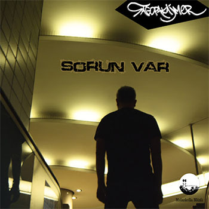

| Ana Sayfa | Özgeçmiş | Fotoğraflar | Müzikler | Konserler | Sosyal Ağlar |
|
Özyavuz (d. 17 Ağustos 1978, Samsun), bilinen sahne adıyla Sagopa Kajmer (veya bilinen eski adlarıyla DJ Mic Check ve Silahsız Kuvvet), Türk rap
müzisyeni, müzik yapımcısı ve DJ. Yunus Özyavuz, 17 Ağustos 1978'de Samsun'da doğdu. İlköğretim, ortaöğretim ve lise eğitimini Samsun'da tamamladı. Samsun'da
yerel bir radyoda DJ'lik yaparak işe başladı. Daha sonra üniversite eğitimi için İstanbul'a geldi ve İstanbul Üniversitesi Edebiyat Fakültesi, Fars Dili ve
Edebiyatı bölümünü bitirerek mezun oldu. |
|
|
Sagopa Kajmer'in Anlamı Yunus Özyavuz kendi tabiriyle Sagopa Kajmer'in kaynağını şu sözlerle açıklıyor: Mısır'da eski bir piramit... araştıran da Kajmeri. İşte, orada araştırmasını yaparken kendi mahlası Sagopa'nın Kajmer'i... sırrını çözen insan. Beyazıt Öztürk ve Meral Okay'ın sunduğu Nasıl Yani programında bu durumu şöyle açıkladı: Mısır'da piramitlerde araştırma yapan bir bilim adamı... içerideki tüm koordinasyonları hiyeroglif olarak yazıyor ve daha sonra da orada hayatını kaybediyor akımlardan dolayı. Onun sonrasında gelen bilim adamları, ilimle ilgilenen kişiler papirüslerden okudukları kadarıyla bu keşifleri yapan insanın, Sagopa piramidinin keşfini yapan insanın Kajmeri isminde birisi olduğunu ortaya çıkarıyorlar. Ben de bunu makalede okumuştum üniversite yıllarımda. 17 Kasım 2015'te Mesut Yar'ın sunduğu Burada Laf Çok programında ise Mesut Yar'ın "Bu ne anlama geliyor?" sorusunu şu şekilde yanıtladı: Gizem... Bir de Sago diye bir ağaç var Tayland'da. Güzel bir palmiye türü. Kajmer çocuk demek. Belalı çocuk... Bu biraz da doğu kökenli Avesta... Zend Avesta, onların kitapları, Ahura Mazda'dan geliyor. Etkilendikleri Sanatçının rap müziğine yönelmesinde Run-DMC'nin müzikleri etkili olmuştur. Pembe Gazete'ye verdiği röportajda "Küçükken kendimi Run-DMC'den Jam Master Jay sanıyordum. LL Cool J ve Fat Boys da çok önemli isimlerdir. Onlarla rapi bugüne taşıdım. Etkiyi onlardan aldım." şeklinde konuştu. Sanatçı, kendi yazdığı sözlerde Ömer Hayyam, Firdevsî ve Mevlânâ Celâleddîn-i Rûmî'nin eserlerinden etkilendiğini söyledi. Sagopa Kajmer'in tarzını değiştirip sakal bırakması ise Cübbeli Ahmet Hoca'nın sohbetlerinden etkilenmesi şekilde yorumlandı. Ancak sanatçı sakal bırakmasının sadece bir hadis gereği olduğunu söyledi. |
|
Müzikal Tarzı Sagopa Kajmer, bir rap müzik sanatçısıdır. Rap kariyerine Silahsız Kuvvet olarak başladığı sırada şarkılarında Anadolu ezgileri ve türküleri kullandı. İlk iki albümde sokakbattle tarzına ağırlık veren Sagopa Kajmer 3. albümüyle birlikte karamsar bir havada hayatı ele aldı, savaş ve insanlık üzerine şarkılar yaptı. Başta küfürlü şarkılar söyleyen sanatçı daha sonra bundan vazgeçti. Ayrıca ünlü olmamak için şarkılarını değişik bir ses tonuyla söyledi. Vokalinin arabesk olduğu düşünülmektedir. Özel Hayatı Babasının adı Mehmet Özyavuz'dur ve Emre adında bir erkek kardeşi vardır. İstanbul Üniversitesi, Fars Dili ve Edebiyatı mezunudur. 1 Ağustos 2006'da kendisi gibi rap sanatçısı olan Esen Güler (Kolera) ile evlendi. 20 Kasım 2017'de ondan boşanarak ayrıldı. Dinî inancı ise yoktur. Ödülleri ve Adaylıkları 2006'da düzenlenen 12. Kral TV Video Müzik Ödülleri'nde "Vasiyet" adlı şarkı klibi En İyi Video Klip ödülünü kazandı. MTV Türkiye tarafından 6 Kasım 2008'de düzenlenen Avrupa Müzik Ödüleri'nde Türkiye'de yılın en iyisi olmaya aday gösterildi. Kolera ile 2. düet albümü olan Bendeki Sen 2011'de düzenlenen TRT Müzik Ödülleri'nde "Yılın Albümü" kategorisine aday gösterildi. |
| |
| Kağıt Kesikleri | Yunus - EP | Sarkastik |
 |
||
| Saykodelik - EP | Kötü İnsanları Tanıma Senesi | Romantizma (Re-Mastered) |
| Bir Pesimistin Gözyaşları | Ahmak Islatan | Saydam Odalar |
|
Single'lar |
||
| Kim | Onca Şeyin Ardından | Avutsun Bahaneler |
|  | ||
| Sorun Var | Sertlik Kanında Var Hayatın | 366.Gün |
 |
|||
| Gölge Haramileri | İstisnalar Kaideyi Bozmaz | Galiba | Neyim Var ki |
| Neyse | Avutsun Bahaneler | Ateşten Gömlek | Toz Taneleri |
|
Ana Sayfa
Özgeçmiş Fotoğraflar Müzikler Konserler Sosyal Ağlar |